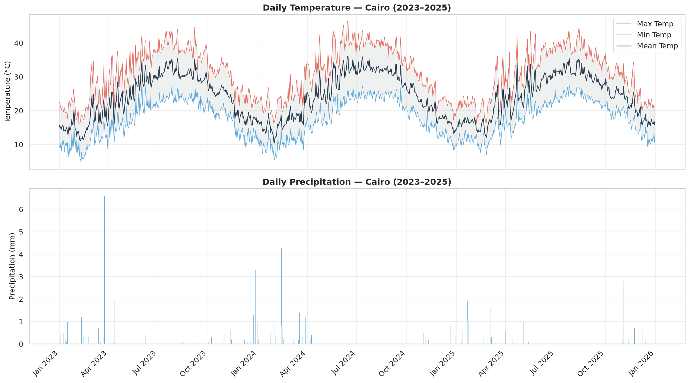
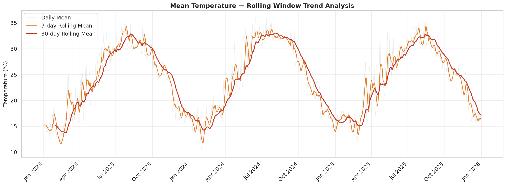
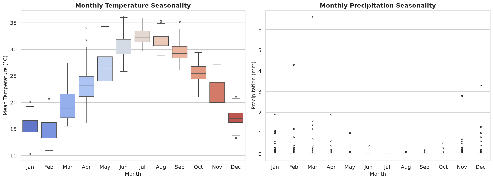
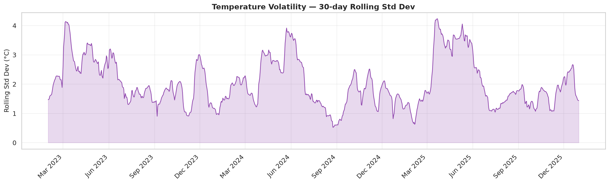
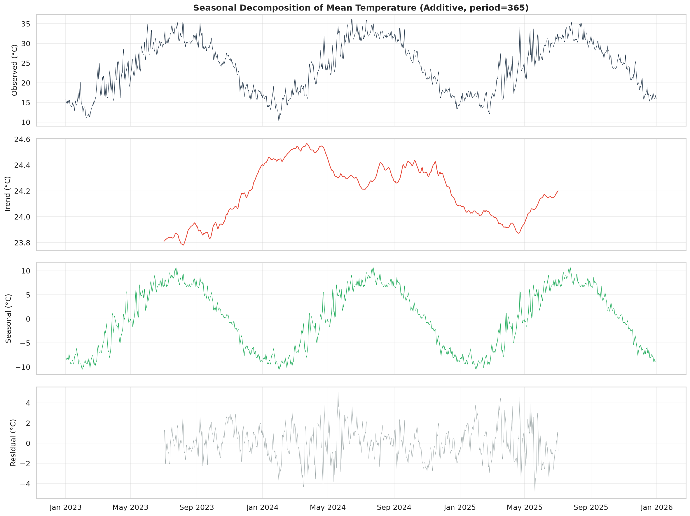
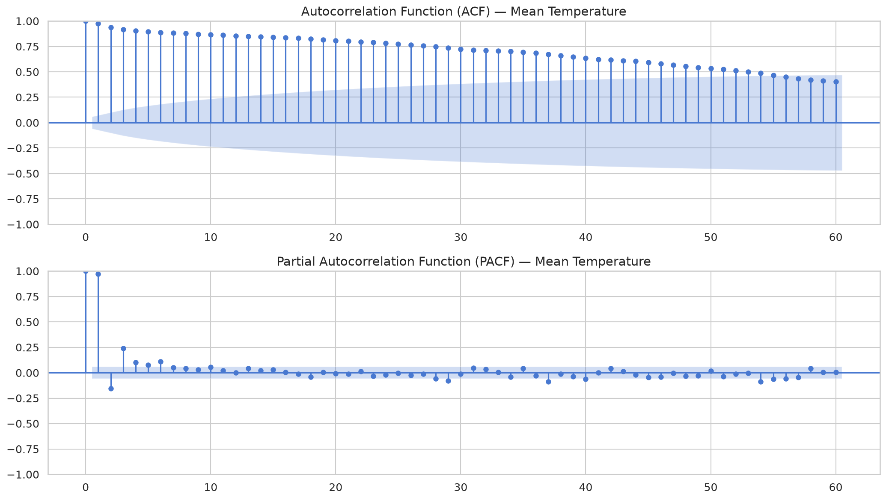
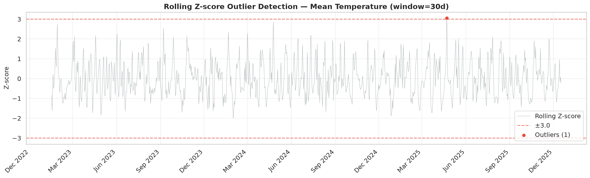

End-to-End Weather Forecasting
Foundation Phase: Automated Data Ingestion, Temporal Structuring, and Rigorous Time-Series Exploratory Data Analysis for Cairo, Egypt.
Climatological Context & API Selection
Why Cairo, Open-Meteo, and a 3-year daily granularity?
Classified under Köppen as a Hot Desert Climate with extreme diurnal and seasonal variance.
- Thermal Range: Mean temperature ranges from 10.3°C to 36.1°C (daily extremes: 4.6°C to 46.4°C).
- Zero-Inflated Rain: 94.0% dry days tests point-process and hurdle modeling rather than naive OLS.
Provides access to ECMWF ERA5 Reanalysis gridded data without authentication drift.
- Zero Friction: Keyless, non-commercial tier with generous 10,000 requests/day limit.
- Research Quality: Physics-assimilated reanalysis back to 1940 with native metric units.
Daily resolution chosen over hourly to focus on day-ahead synoptic forecast horizons.
- Multi-Cycle Decomposition: Multiple annual cycles (365 days) enable clean seasonal isolation.
- Leak-Free Splits: Train = 731 rows (2023–2024, leap year), Test = 365 rows (2025).
Modular Architecture & Fast Execution
Designed for seamless integration into predictive modeling and inference pipelines.
├── config.py # Centralized parameters & env overrides
├── run_pipeline.py # Orchestrator (Parts 1 → 2 → 3, with --use-cached)
├── src/
│ ├── data_acquisition.py # API client & cached fallback
│ ├── data_preparation.py # Schema enforcement & cleaning
│ └── eda.py # ADF + KPSS tests & 9 visuals
├── artifacts/figures/ # Publication-grade outputs
└── notebooks/ # Interactive demo & defense
Future modeling scripts simply import clean data via from src.data_preparation import load_clean_data.
uv- Deterministic Virtualenv: Managed entirely via
uv venvanduv pip install. - Opt-In Cache Control: Supports
--use-cachedfor deterministic offline reproduction. - Git Readiness: Strict
.gitignoreprotecting virtual environments and bytecode.
Preprocessing & Domain-Specific Imputation
Rigorous temporal continuity enforcement and physics-justified handling of missing values.
- Explicit Daily Frequency: Anchored with
pd.asfreq('D')ensuring complete temporal monotonicity. - Duplicate & Gap Detection: Verified zero timestamp collisions and zero omitted calendar dates.
- Physical Sanity: Validated $T_{\min} \le T_{\text{mean}} \le T_{\max}$ with zero thermal inversions across all 1,096 days.
- Defensive Imputation: Raw API response contained 0 nulls; imputation logic was defensive and unexercised.
| Variable | Unit | Plausible Range | Observed Range |
|---|---|---|---|
| temp_mean_c | °C | [-5, 50] | 10.3 to 36.1 °C |
| temp_min_c / max_c | °C | [-10, 55] | 4.6 to 46.4 °C |
| precipitation_mm | mm | [0, 200] | 0.0 to 6.6 mm |
| humidity / cloud | % | [0, 100] | Within [0, 100]% |
Linear Interpolation for Temperature, Humidity, Wind, Cloud Cover.
Rationale: Atmospheric state obeys thermal inertia and boundary layer continuity. Values evolve smoothly day-over-day; interpolation preserves natural trajectories.
Strict Zero-Fill (`0.0 mm`) for Rainfall.
Rationale: In Cairo's desert climate, rainfall is an intermittent, discrete shock event. Linear interpolation between two sparse showers creates artificial multi-day rainfall drizzle ("phantom rain"), destroying sparsity.
Full-Span Trajectories & Rolling Trends
Capturing annual periodicity and multi-timescale smoothing (2023–2025).

- 7-Day Rolling Mean: Smooths weekly synoptic noise and transient frontal passages without lagging seasonal shifts.
- 30-Day Rolling Mean: Clearly isolates the macro-seasonal warming and cooling transitions.
- Precipitation Spikes: Rainfall is strictly clustered in winter/early spring with a 3-year record max of 6.6 mm.

Seasonal Distribution & Temperature Volatility
Monthly dispersion reveals equinoctial volatility spikes in spring and autumn.


- Peak Winter vs Summer: Mean monthly temps rise from 15.9°C (winter avg) to 31.6°C (summer avg).
- Thermal Volatility Spikes: Rolling standard deviation peaks in March–May and October due to shifting desert/marine air boundaries.
- Stable Summers: July and August exhibit narrow interquartile ranges and minimal volatility.
Classical Additive Seasonal Decomposition
Decomposing via statsmodels seasonal_decompose: $Y_t = \text{Trend}_t + \text{Seasonal}_t + \text{Residual}_t$ (Period $s=365$).

Remains stable around 24.0°C – 24.5°C across 2023–2025, confirming no artificial macro-drift over the 3-year study horizon.
Displays a deterministic sinusoidal wave with an amplitude of ±10.0°C, peaking precisely in late July.
Stationary random fluctuations bounded within ±4.0°C representing day-to-day weather fronts.
Autocorrelation & Autoregressive Memory
Diagnosing persistence, seasonal cycles, and lag dependencies up to 60 days.

Slow, sinusoidal geometric decay confirms non-stationary seasonal persistence. Temperature changes gradually with significant multi-month memory.
Strong primary spike at Lag 1 ($\phi_{11} \approx 0.88$), followed by rapid attenuation within Bartlett's confidence bounds ($\pm 1.96/\sqrt{N}$).
The series has high day-ahead Markovian memory. Lag-1 to Lag-3 terms will serve as dominant predictive features in Week 5 models.
Stationarity Diagnostics: ADF & KPSS Tests
Comprehensive evaluation across raw, first-differenced, and seasonal-differenced series.
- Raw Series (N=1,096): ADF stat = -2.0139 ($p = 0.2805$); KPSS stat = 0.2351 ($p = 0.1000$). ADF fails to reject while KPSS does not reject stationarity — evidence is inconclusive and seasonality-driven rather than a clear unit root.
- First Difference d=1 (N=1,095): ADF stat = -15.1740 ($p < 10^{-20}$); KPSS stat = 0.1501 ($p = 0.1000$) → Confirmed stationary.
- Seasonal Difference D=1, s=365 (N=731): ADF stat = -9.4576 ($p < 10^{-15}$); KPSS stat = 0.3906 ($p = 0.0812$) → Confirmed stationary.
ADF Statistic: -30.5373. Strongly reject unit root hypothesis; series is stationary.
Rolling Z-Score Anomaly Diagnosis
Localizing anomalies against 30-day seasonal baselines: $Z_t = (x_t - \mu_{w,t}) / \sigma_{w,t}$.

While 34.1°C is routine in July, in late April the 30-day seasonal baseline is only ~23.1°C.
Rapid spring thermal spike is consistent with a Khamsin-type event; not externally verified.
Global Z-scores incorrectly flag ordinary summer days as outliers and miss spring heatwaves. Rolling Z isolates contextual anomalies relative to local seasons.
Predictive Modeling Roadmap (Weeks 5 & 6)
How Week 4 outputs directly seed the upcoming feature engineering and model training pipeline.
- Autoregressive Lags: Lags $t-1, t-2, t-7$ guided by PACF.
- Harmonic Features: Fourier annual sine/cosine terms.
- Rolling Windows: 7-day and 14-day rolling mean and standard deviation features.
- Statistical Baselines: Seasonal Naïve and SARIMA(1,0,1)(1,1,0)₃₆₅.
- Gradient Boosters: XGBoost & LightGBM with lag arrays.
- Deep Learning: Sequence-to-sequence LSTM for multi-step horizons.
- Leak-Free Splits: Train = 731 rows (2023–24, leap year), Test = 365 rows (2025).
- Hurdle Architecture: Classifier for precipitation occurrence + Gamma regressor for amount.
- KPIs: MAE, RMSE, and Continuous Ranked Probability Score (CRPS).
References & Technical Standards
Primary documentation, scientific data sources, and methodological frameworks.
- Open-Meteo Historical API:
https://archive-api.open-meteo.com(CC BY 4.0 Attribution). - ECMWF ERA5: Hersbach et al. (2020), The ERA5 global reanalysis. Quarterly Journal of the Royal Meteorological Society.
- Köppen-Geiger Map: Beck et al. (2018), Present and future Köppen-Geiger climate classification maps at 1-km resolution.
- Forecasting Principles: Hyndman, R.J., & Athanasopoulos, G. (2021). Forecasting: principles and practice, 3rd edition, OTexts.
- Stationarity & Testing: Dickey, D.A. and Fuller, W.A. (1979); Kwiatkowski, D., Phillips, P.C.B., Schmidt, P. and Shin, Y. (1992).
- Zero-Inflated Time-Series: Cameron, A.C. and Trivedi, P.K. (2013). Regression Analysis of Count Data. Cambridge University Press.